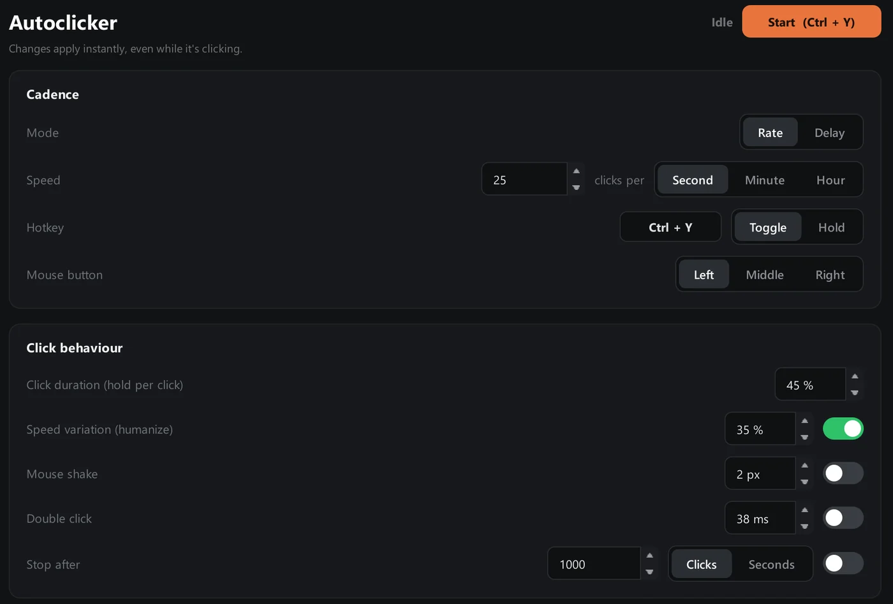

Autoclicker
Clicks at any rate you set, in place or through a list of points.
- Clicks per second, minute or hour, or an exact interval.
- Humanized timing that varies each click while the average stays on target.
- Sequences: mark points with F7, finish with F8, and Volt clicks or drags through them in order.
- Failsafes: only click in a chosen window, or stop when focus changes.
Toggle with Ctrl+Y, or hold to click.

